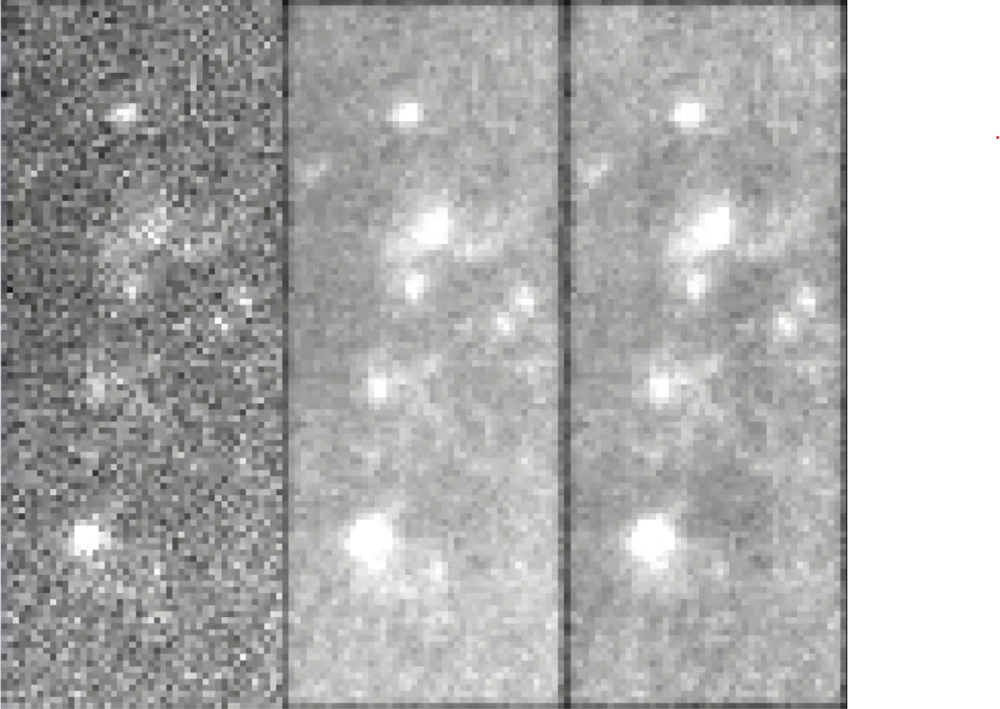
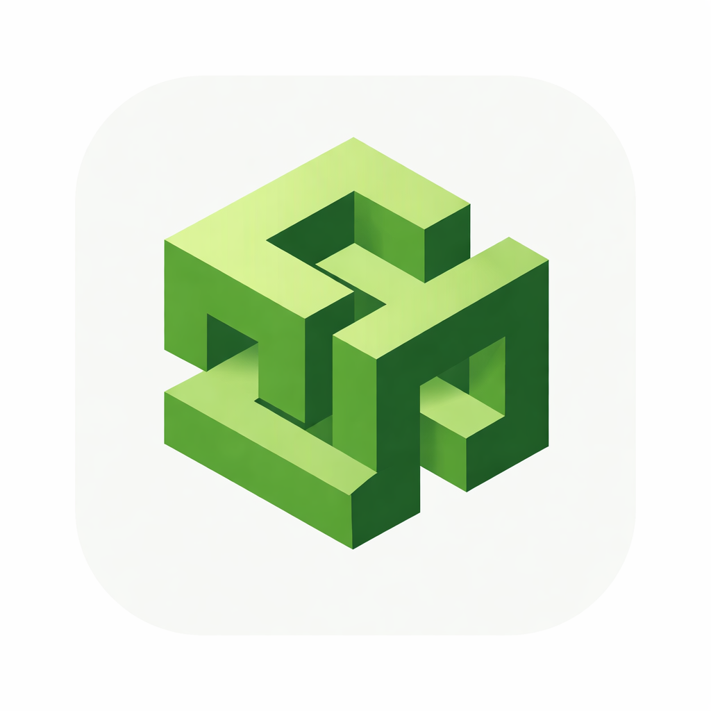
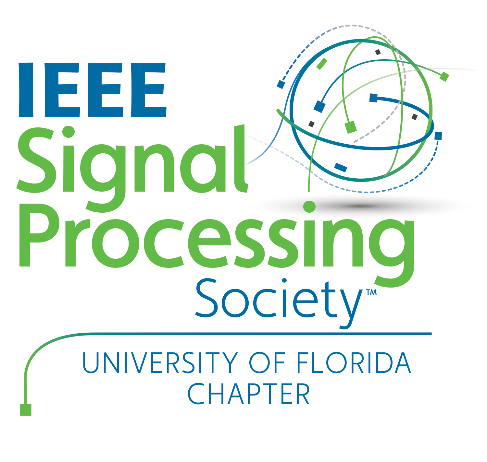

CNEL research
EEG, voltage imaging, biological time-series modeling, and reproducible experiment infrastructure.
My research at the University of Florida is organized around two tracks: lab-focused work in the Computational NeuroEngineering Lab and engineering, teaching, and prototype work through IEEE Signal Processing Society efforts at UF. The common thread is rigorous signal processing that holds up under real experimental and deployment constraints.
EEG, voltage imaging, biological time-series modeling, and reproducible experiment infrastructure.
Student-facing research engineering, workshops, neuroengineering prototypes, robotics, and open-source systems.
Static canonical pages with detailed descriptions, collaborators, and links.

Pipeline that turns brain-wave recordings (EEG) into a small set of hidden time-series ‘states’ using a state-space model (Hierarchical Linear Dynamical System, HLDS), then evaluates those states for prediction and separability.

Pipeline for 2D voltage imaging videos that flags ‘events’ (fast, localized changes) using statistical detectors inspired by radar signal processing, producing maps and summaries for downstream analysis.

System that extracts structured nodes (claims, evidence, limitations, etc.) from papers and scores them to support literature review and comparison across a collection.
Ergo integrates biosignal hardware, feature extraction, and simulation to test how control systems move between stable and unstable regimes under cooperating vs. competing subjects and fatigue.
A quick note on using HLDS and related models to capture structure in EEG, instead of treating everything as i.i.d. features.

Lessons from turning a modular acquisition concept into a real device that must deal with cables, noise, and human constraints.

How IEEE SPS @ UF and UF AI Club pushed me to build a curriculum that connects analysis, probability, and ML in concrete ways.